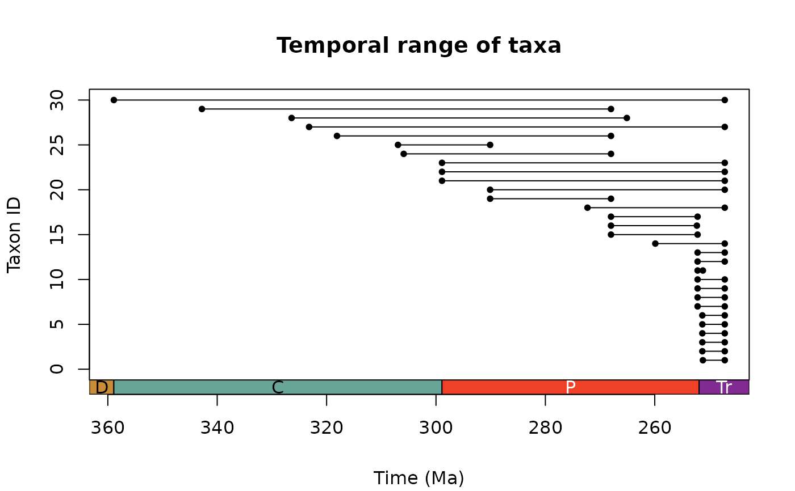
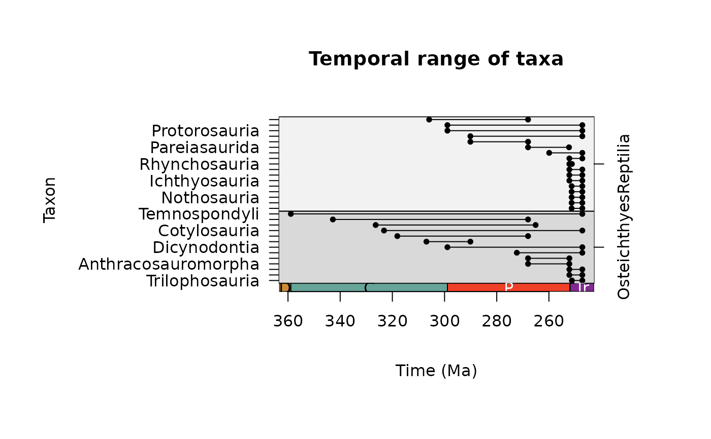

A function to calculate the temporal range of fossil taxa from occurrence data.
Usage
tax_range_time(
occdf,
name = "genus",
min_ma = "min_ma",
max_ma = "max_ma",
by = "FAD",
plot = FALSE,
plot_args = NULL,
intervals = "periods"
)Arguments
- occdf
dataframe. A dataframe of fossil occurrences containing at least three columns: names of taxa, minimum age and maximum age (seename,min_ma, andmax_maarguments). These ages should constrain the age range of the fossil occurrence and are assumed to be in millions of years before present.- name
character. The name of the column you wish to be treated as the input names, e.g. "genus" (default).- min_ma
character. The name of the column you wish to be treated as the minimum limit of the age range, e.g. "min_ma" (default).- max_ma
character. The name of the column you wish to be treated as the maximum limit of the age range, e.g. "max_ma" (default).- by
character. How should the output be sorted? Either: "FAD" (first-appearance date; default), "LAD" (last-appearance data), or "name" (alphabetically by taxon names).- plot
logical. Should a plot of the ranges be generated?- plot_args
list. A list of optional arguments relevant to plotting. See Details for options.- intervals
character. The time interval information used to plot the x-axis: either A) acharacterstring indicating a rank of intervals from the built-inGTS2020, B) acharacterstring indicating adata.framehosted by Macrostrat (seetime_bins), or C) a customdata.frameof time interval boundaries (see axis_geo Details). A list of strings or data.frames can be supplied to add multiple time scales to the same side of the plot (see axis_geo Details). Defaults to "periods".
Value
A dataframe containing the following columns:
unique taxa (taxon), taxon ID (taxon_id), first appearance of taxon
(max_ma), last appearance of taxon (min_ma), duration of temporal
range (range_myr), and number of occurrences per taxon (n_occ) is
returned.
Details
The temporal range(s) of taxa are calculated by extracting all
unique taxa (name column) from the input occdf, and checking their
first and last appearance. The temporal duration of each taxon is also
calculated. If the input data columns contain NAs, these must be
removed prior to function call. A plot of the temporal range of each
taxon is also returned if plot = TRUE. Customisable argument options
(i.e. graphics::par()) to pass to plot_args as a list (and their
defaults) for plotting include:
xlab = "Time (Ma)"
ylab = "Taxon ID"
col = "black"
bg = "black"
pch = 20
cex = 1
lty = 1
lwd = 1
Note: this function provides output based solely on the user input data. The true duration of a taxon is likely confounded by uncertainty in dating occurrences, and incomplete sampling and preservation.
Examples
# Grab internal data
occdf <- tetrapods
# Remove NAs
occdf <- subset(occdf, !is.na(order) & order != "NO_ORDER_SPECIFIED")
# Temporal range
ex <- tax_range_time(occdf = occdf, name = "order", plot = TRUE)

# Customise appearance
ex <- tax_range_time(occdf = occdf, name = "order", plot = TRUE,
plot_args = list(ylab = "Orders",
pch = 21, col = "black", bg = "blue",
lty = 2),
intervals = list("periods", "eras"))
